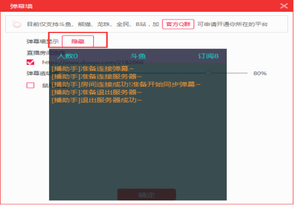
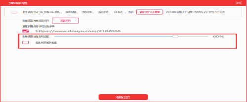

主播可打开弹幕助手设置界面，对播助手弹幕墙进行设置，主播在操作弹幕助手这一步时，必须先设置推送平台，否则弹幕墙无法获取房间不能进行设置。
1 勾选直播房间后，点击显示/隐藏按钮，弹幕墙会出现/消失；勾选一个则出现一个弹幕墙，勾选两个房间则出现两个弹幕墙，出现两个弹幕墙时窗口重叠出现，需要主播拖动移走一个弹幕墙才可以看见另外一个。如下图弹幕墙。

2 主播可以拖动控制条设置弹幕墙的弹幕透明度，勾选鼠标穿透设置鼠标是否可以穿透弹幕墙做操作；
